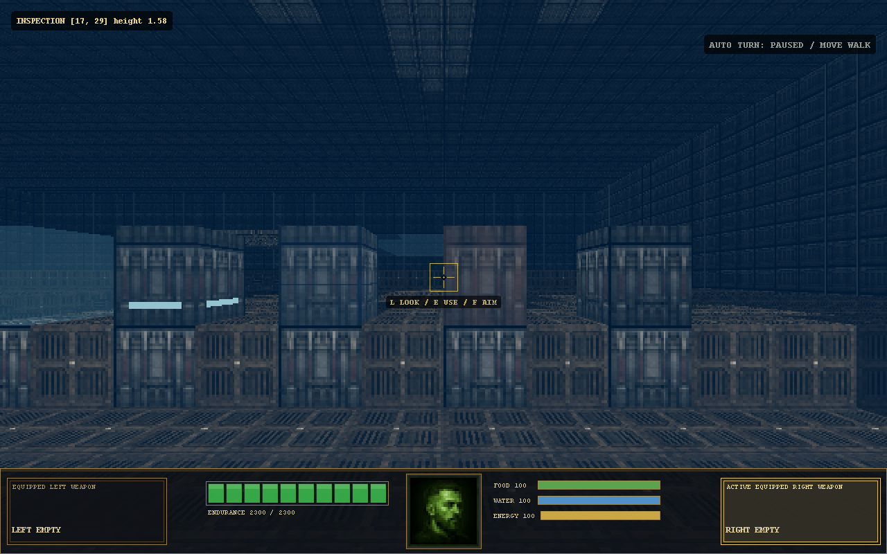
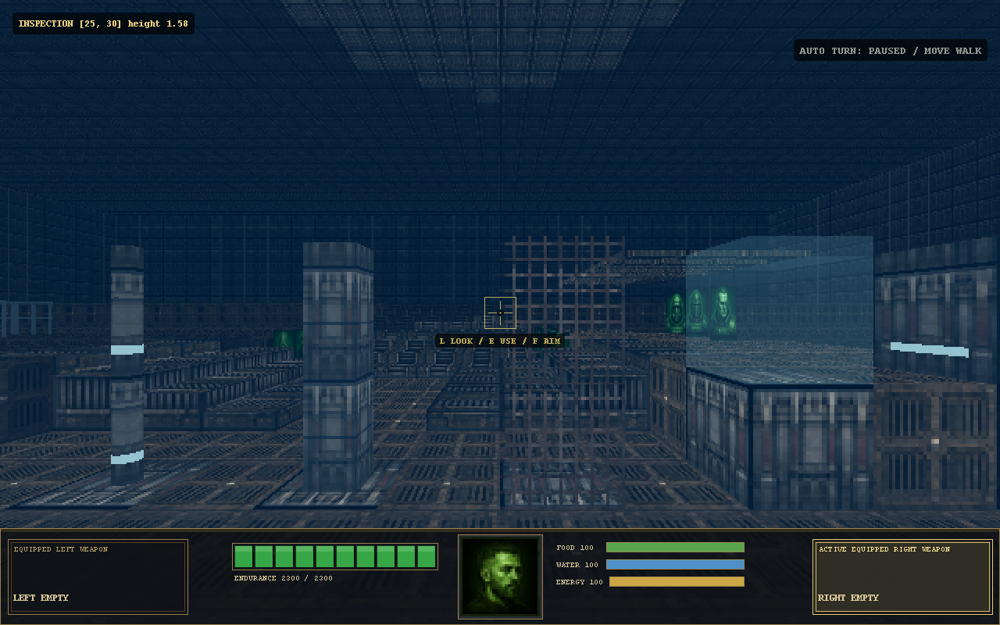
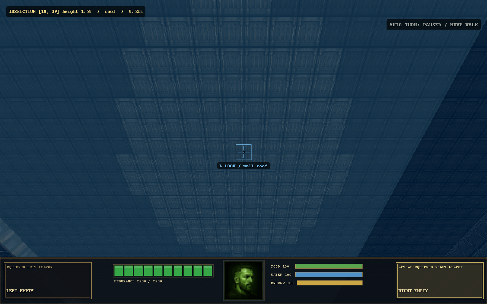
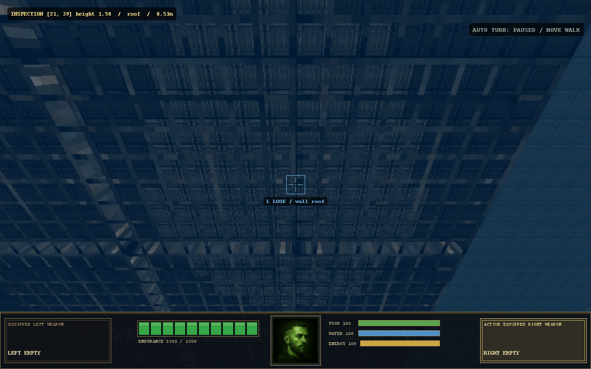
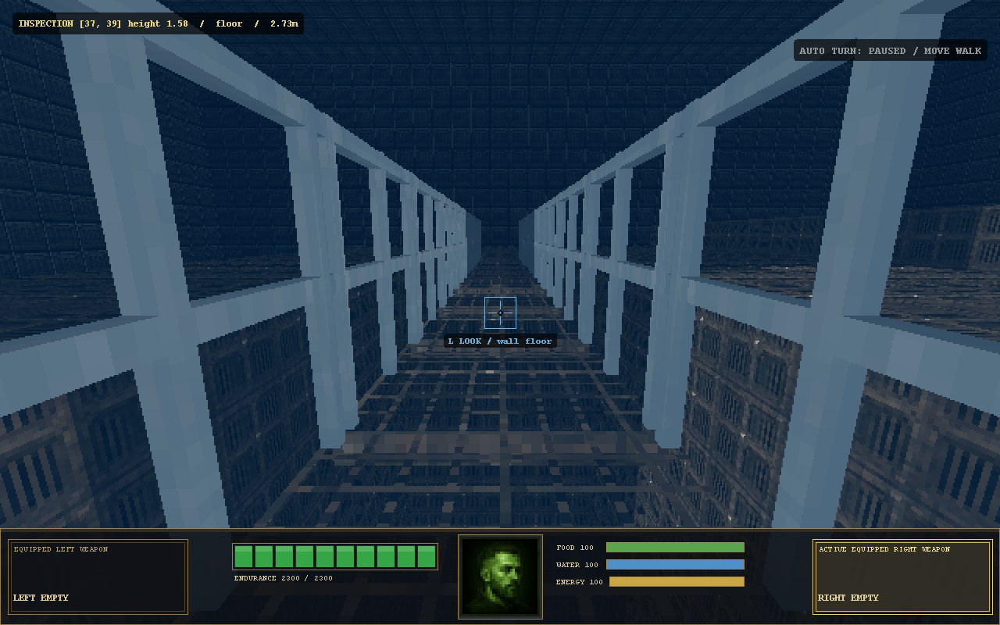
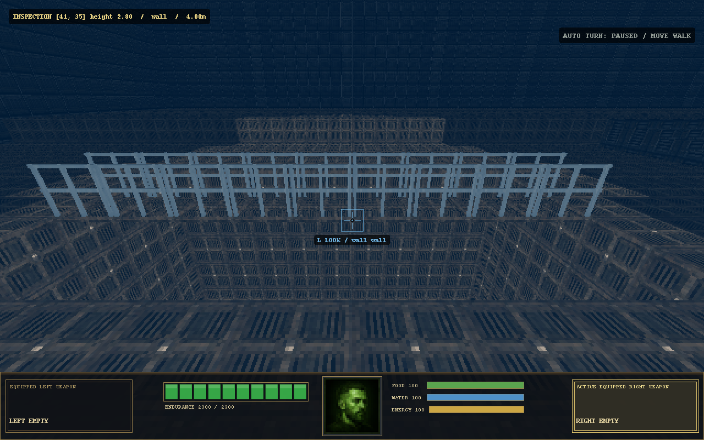
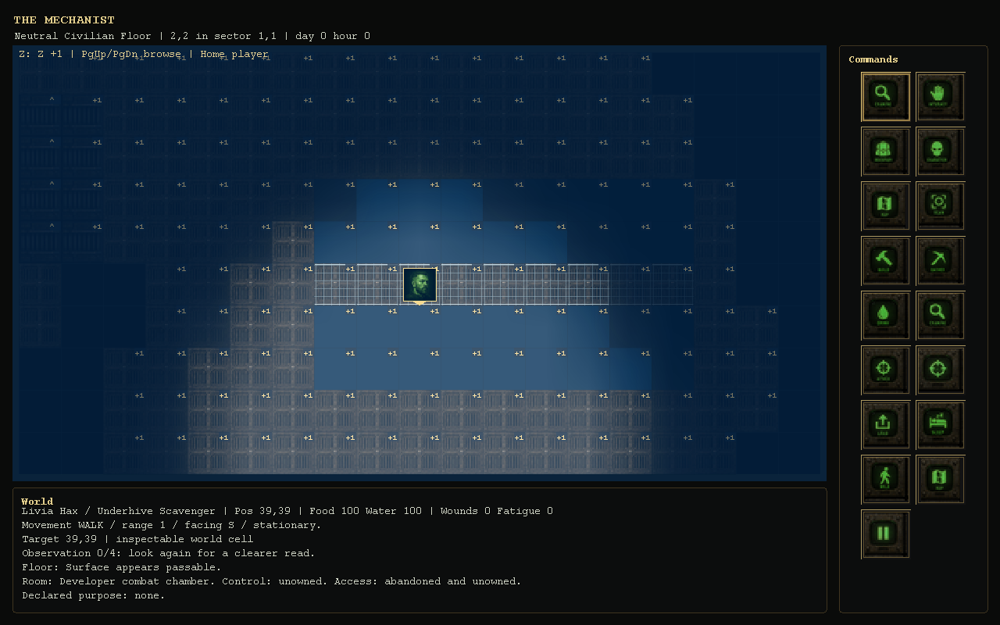

2026-11-02 · Existing developer combat chamber, GamePanel and native assets. First-person frames use labeled inspection cameras; the normal view remains the 2D planner.
Gallery notes, actual tile data and validation · System specification and remaining work






